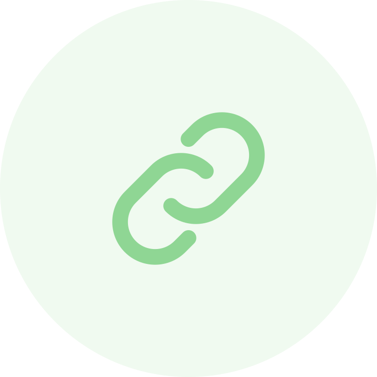

Teil 2 von 6 · Der Link
In 4
Klicks
bereit.
Projekt anlegen, Namen eintragen, WhatsApp öffnen. Dort Kontakt wählen und senden.
- 4 Klicks
- 1 Eingabe
- WhatsApp, SMS, E-Mail

Teil 2 von 6 · Der Link
Projekt anlegen, Namen eintragen, WhatsApp öffnen. Dort Kontakt wählen und senden.